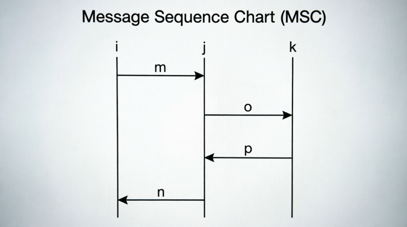
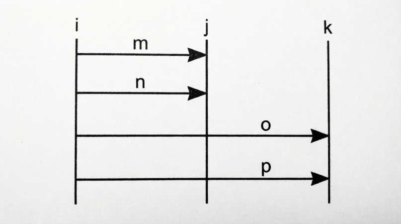
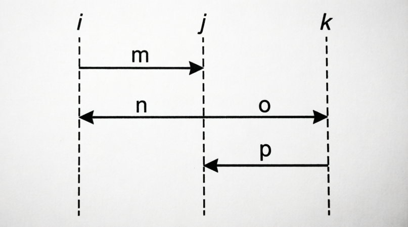
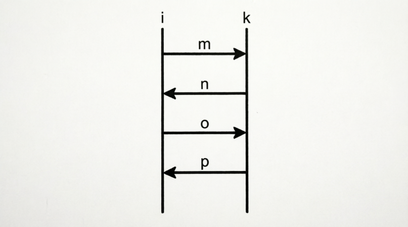

Annotations / Qwen 3.6 Plus - Thinking / Example 6.docx
Question: Consider the following two message sequence charts labelled "first" and "second"; compose them horizontally and draw the resulting composed message sequence chart.

Answer:
Based on the standard rules for composing Message Sequence Charts (MSCs), **horizontal composition** (often referred to as parallel composition) involves merging the instances that appear in both charts and allowing the events to occur concurrently (interleaved), respecting the local ordering of each original chart.
Here is the step-by-step derivation:
1. **Identify Instances:**
* "msc first" has instances: **$i$** and **$j$**.
* "msc second" has instances: **$j$** and **$k$**.
* The union of instances is **$\{i, j, k\}$**. Since **$j$** is common to both, its lifeline is merged. The resulting chart will have three lifelines arranged horizontally: $i$, $j$, and $k$.
2. **Identify Messages and Constraints:**
* From "msc first":
* Message **$m$**: sent from $i$ to $j$.
* Message **$n$**: sent from $j$ to $i$.
* Constraint: On instance $j$, receiving $m$ happens before sending $n$. On instance $i$, sending $m$ happens before receiving $n$.
* From "msc second":
* Message **$o$**: sent from $j$ to $k$.
* Message **$p$**: sent from $k$ to $j$.
* Constraint: On instance $j$, sending $o$ happens before receiving $p$. On instance $k$, receiving $o$ happens before sending $p$.
3. **Compose (Interleave):**
* Since it is a horizontal (parallel) composition, there is no strict global ordering between the events of "first" and "second", other than what is required to keep the messages valid (causality) and respect the local order on the shared instance $j$.
* A logical and common way to draw this composition—effectively chaining the interactions—is to have the "forward" messages happen first and the "backward" messages happen second.
* **Forward path:** $i \xrightarrow{m} j \xrightarrow{o} k$
* **Backward path:** $k \xrightarrow{p} j \xrightarrow{n} i$
* This ordering ($m, o, p, n$) satisfies all constraints:
* $j$ receives $m$, then sends $o$, then receives $p$, then sends $n$. (Satisfies $m$ before $n$ and $o$ before $p$).
**Resulting Chart Description:**
* **Lifelines:** Three vertical lines labeled **$i$**, **$j$**, and **$k$** from left to right.
* **Messages:**
1. Arrow **$m$** from $i$ to $j$ (top).
2. Arrow **$o$** from $j$ to $k$ (below $m$).
3. Arrow **$p$** from $k$ to $j$ (below $o$).
4. Arrow **$n$** from $j$ to $i$ (bottom).
**Visual Representation (ASCII):**
```text
i j k
| | |
| m | |
|------>| |
| | o |
| |------>|
| | |
| | p |
| |<------|
| n | |
|<------| |
| | |
```
*(Note: In a strict parallel composition, $m$ and $o$ could happen in any relative order, as could $n$ and $p$, as long as $m$ is before $n$ and $o$ is before $p$. The drawing above shows one valid linearization that creates a coherent flow $i \to j \to k \to j \to i$.)*

Task type: Composition
Judgment: Incorrect
Question: What is the order between sending m and receiving p in the composed diagram.
Answer:
Based on the composed MSC diagram, **sending m happens before receiving p**.
Looking at the vertical ordering (top to bottom represents temporal sequence):
1. **m** is sent from i to j (first/topmost message)
2. **o** is sent from j to k
3. **p** is sent from k to j (and received by j)
4. **n** is sent from j to i
Therefore, **sending m occurs before receiving p** in the composed diagram. The message m is the first event in the sequence, while p is received as the third event.
Task type: Composition
Judgment: Incorrect
Question:
Please consider the original two MSCs labelled "first" and "second", given here again. Please compose them vertically (by putting "first" on top and "second" at the bottom). Please draw the resulting composed diagram.
Answer:
Based on the rules of vertical composition for Message Sequence Charts (MSCs), we combine the two charts by placing "msc first" on top of "msc second" and merging the common instance, which is **$j$**.
**Steps to compose:**
1. **Instances:** The resulting chart will have three lifelines: **$i$**, **$j$**, and **$k$**.
2. **Ordering:** Since it is a vertical composition, all events in "msc first" must happen before the events in "msc second" on the shared lifeline **$j$**.
3. **Messages:**
* From "msc first": Message **$m$** ($i \to j$) and Message **$n$** ($j \to i$).
* From "msc second": Message **$o$** ($j \to k$) and Message **$p$** ($k \to j$).
**The resulting composed diagram:**
```text
i j k
| | |
| m | |
|------>| |
| | |
| | n |
|<------| |
| | |
| | o |
| |------>|
| | |
| | p |
| |<------|
| | |
```
**Description of the flow:**
1. Instance **$i$** sends message **$m$** to **$j$**.
2. Instance **$j$** sends message **$n$** back to **$i$**.
3. (Later on lifeline $j$) Instance **$j$** sends message **$o$** to **$k$**.
4. Instance **$k$** sends message **$p$** back to **$j$**.
Based on the vertical composition of the two MSCs, here is the resulting diagram:
```
i j k
| | |
| m | |
|-------->| |
| | |
| | n |
|<--------| |
| | |
| | o |
| |-------->|
| | |
| | p |
| |<--------|
| | |
```
**Explanation of the vertically composed MSC:**
- **Three instances (lifelines):** i, j, and k arranged horizontally
- **Message sequence (top to bottom):**
1. **m**: Instance i sends message m to instance j
2. **n**: Instance j sends message n back to instance i
3. **o**: Instance j sends message o to instance k
4. **p**: Instance k sends message p back to instance j
The vertical composition ensures that all events from "msc first" (messages m and n) occur before the events from "msc second" (messages o and p) on the shared instance j, maintaining the proper temporal ordering.



Task type: Composition
Judgment: Incorrect
Question:
What is the order between receiving n and receiving p in the vertically-composed MSC.
Answer:
In the vertically-composed MSC (where "first" is placed on top and "second" at the bottom), **receiving n happens before receiving p**.
Here's the reasoning:
In vertical composition:
1. All events from "msc first" occur before events from "msc second"
2. Message **n** is sent from j to i (in the first MSC)
3. Message **p** is sent from k to j (in the second MSC)
The temporal order from top to bottom is:
1. m: i → j (send and receive)
2. **n: j → i** (send and receive) ← i receives n here
3. o: j → k (send and receive)
4. **p: k → j** (send and receive) ← j receives p here
Therefore, **receiving n occurs before receiving p** in the vertically-composed MSC.
Task type: Composition
Judgment: Incorrect.